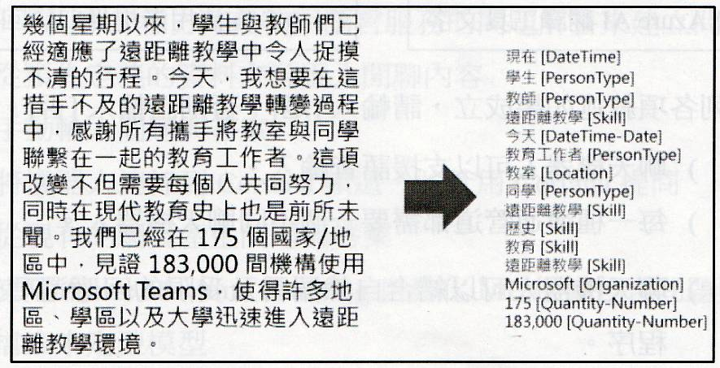
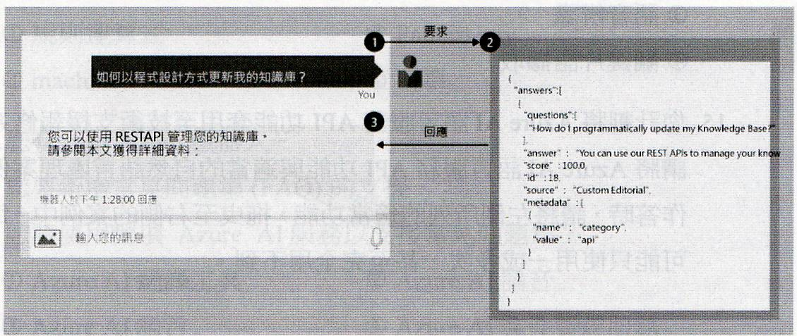

💻 AI-900
自然語言處理
Lecturer: Porshen Lai
Department of Finance
Chihlee University of Technology
2025, Winter
自然語言處理
Natural Language Processing (NLP)
機器接受到自然語言後先轉換成文字，在分解成字彙，理解其內容，最後做出世當的反應，這整個過程稱之為自然語言處理。
相關技術包刮: 斷詞處理, 列表, 詞類標記, 詞意消歧, 字頻, 語法剖析, 建立「向量化」模型 ......
Microsoft Azure 認知服務
| 語言服務 | 語音服務 |
|---|---|
|
|
Azure Bot Service
Web 聊天，電子郵件，Microsoft Teams …
語言認知服務
- Microsoft Azure 語言認知服務有下列功能：
- 判斷文字所使用的語言
- 對文字進行情感分析，以判斷內文是屬於正面或負面情感
- 從文字中擷取關鍵片語，並標註交談重點
- 識別並分類文字中的實體。實體可以是人，地，時，組織，及數量等的常用項目
- Microsoft Azure 語言認知服務可應用於下列案例中：
- 社群媒體摘要分析，用於偵測有關政治情勢或市場產品的好感度
- 文件搜尋，用於擷取出關鍵片語，協助製作摘要文件或目錄
- 由文件或其他文字中擷取出品牌資訊或公司名稱，以供辨識之用
語言偵測
- 語言偵測功能可以辨識出文章使用的語言，系統偵測後將回傳下列資料：
- 語言名稱: Chinese_Traditional | 繁體中文 | …
- ISO 639-1 語言識別碼: zh_cht | unknown | …
- 信心指數: 信心指數值 | NaN
情感分析
- 評估文件後傳回文件的情感分數和標籤
- 按「正負尺度」來評估文件
- 文件經情感分析後會傳回 0 到 1 之間的情感分數，接近 1 的值表示正向情感，接近 0 的值表示負面情感
關鍵片語擷取 (KPE)
- 自動辨識出文件內有意義且具代表性的片語，應用範圍包刮：
- 識別出文件中的表達重點，進行摘要說明
- 檢視電子郵件並分類為工作相關郵件，私人郵件或垃圾郵件
- 自動建立文件索引
- 文字自動過濾不雅字眼
- 相同主題的文件自動歸類
具名實體辨識 (NER)
- NER: Named Entity Recognition
- 專有名詞辨識
- 具名實體辨識
- 輸入一篇文章，服務會傳回該文件的「實體」清單「實體」是特定類型的項目或分類 (人員，地點，組織和時間等)。如下表，類型還可以在細分為子類型
類型 子類型 範例 人 徐則林 位置 臺北市 數量 溫度 37.5 ⁰C 數量 數字 3,三 日期時間 日期 2024年10月28日
語音服務
語音服務包含下列應用程式開發介面 (API)
- 語音轉換文字
- 文字轉換語音
- 語音翻譯
語音辨識
- 「原音」模型：
- 可以將音訊轉換成音素 (特定聲音的表示法)
- 「語言」模型：
- 可以將音素對應到單字，通常會使用統計演算法，根據音素預測出最可能的單字序列
- 語音辨識產出的文檔，可應用於：
- 為影片提供字幕
- 建立通話或會議的逐字稿
- 自動化課程筆記
- 演講時的內容轉譯成字幕
語音文字轉換API - 語音轉文字
標準聽寫
| 自動語言偵測 |
批次聽寫
| 發音評量 |
自訂語音
| 連續辨識功能 |
發言者識別
| 不雅內容篩選器 |
語音合成
- 進行語音合成，需要下列資訊：
- 文字：要說出的內文
- 語言：以何種語言發聲
- 可能用途
- 產生使用者詢問問題的語音回答
- 電話總機系統的語音功能表
- 大聲朗誦出電子郵件或簡訊
- 公共場所之廣播通知
語音文字轉換API - 文字轉語音
可指定要用來說出文字的語音種類。目前可指定為以下三種語音：
| 標準語音 | 最類似人聲，最簡單且最符合成本效益的語音模型 |
| 神經語音 | 使用標準語音，再以類神經網路來調整合成中音調的部分，增強調和詞型變化的能力，進而產生更自然的發音 |
| 自定神經語音 | 使用自己的資料，建立獨一無二的自訂合成語音 |
翻譯服務
- Azure 提供支援翻譯的認知服務，包括
- 「文字翻譯」服務，執行文字到文字的翻譯
- 「語音翻譯」服務，執行語音轉換文字或語音轉換其他語音的翻譯
- 使用 ISO 639-1 語言代碼來指定來源與目標語言，可同時指定多個目標語言來將來源語言同時翻譯成多種語言。例如:/translate?from=en&to=ja&to=ko
- 翻譯設定
- 過濾不雅內容：可標示用詞不雅的文字
- 選擇性翻譯：可標示不要翻譯的內容
使用交談語言理解建立語言模型
- 電腦不僅能接受輸入的語言，也能夠解讀輸入語言的語義。
- Azure 透過語言服務所提供的「交談語言理解」(CLU) 來處理
- CLU 為「對話語言理解 (LUIS: Language Understanding) 的進階版。
能夠由對話中得到下列三核心概念
- 表達方式 : 使用者所要表述的內容 (Ex: 好熱喔! 打開冷氣。)
- 實體 (Entity)：言語中所指稱的特定項目 (Ex: 冷氣)
- 意圖 (Intent)：期待得到的某項結果 (Ex: 啟動設備)
無法辨識意圖時，預設為 None (無意圖) 會被視為後備的處理程序。
使用 Azure 機器人服務 建構 機器人
- 透過多種通訊通道，以交談方式與使用者互動，提供第一線自動化支援
- 建立自訂知識庫 (KB: Knowledge Base)
- 使用 Azure 語言服務的問題解答功能建立。
- 管理者匯入半結構化的靜態資料(FAQ網頁，PDF，Excel，手冊，文件等文字檔)。
- 系統自動擷取資料中關聯性的相關資訊，整合建立問題與解答。
- 問答配對內容包括:
- 問題的所有替代形式
- 在搜尋期間用來篩選答案選擇的中繼資料標籤
- 後續提示，以備進階搜尋
下列何種情況應該使用關鍵片語擷取？
將一些文件從英文翻譯成德文
辨識哪些文件提供相同主題的資訊
辨識餐廳的評論為正面或負面
根據音軌為影片產生字幕
關鍵片語擷取 (KPE) 通過提取文件中的核心主題，幫助用戶快速理解文件內容或將文件分組以進行主題辨識。
具名實體辨識 (NER) 可用來擷取文件字串中的日期與時間。
| 是 | 否 |
|---|
日期、時間是 NER 可以識別的預建實體類型。
關鍵片語擷取 (KPE) 可用來擷取文件字串中的重要片語。
| 是 | 否 |
|---|
KPE 的主要功能就是識別文件中的核心主題和重要片語。
關鍵片語擷取 可用來擷取文件字串中的所有城市名稱。
| 是 | 否 |
|---|
城市名稱是具名實體 (NER) 的任務，而非 KPE。
關於 Azure Bot Service 與聊天機器人
聊天機器人只能使用自訂程式碼來建置。
| 是 | 否 |
|---|
可以使用如 Power Virtual Agents 等無程式碼平台或 Azure Bot Service 提供的工具建置。
Azure Bot Service 提供用於裝載交談式機器人的服務。
| 是 | 否 |
|---|
Azure Bot Service 提供了建置、連接和管理機器人的基礎設施。
使用 Azure Bot Service 建置的機器人可與 Microsoft Teams 使用者交流。
| 是 | 否 |
|---|
Bot Service 支援多種頻道 (Channels)，包括 Teams、網頁聊天、Line 等。
關於 Azure AI 翻譯工具
下列服務呼叫將接受英文文字做為輸入並且輸出法文和義大利文文字:
/translate？from=it&to=fr&to=en
| 是 | 否 |
|---|
參數 from=it 表示輸入 (來源語言) 是義大利文。
下列服務呼叫將接受英文文字做為輸入並且輸出法文和義大利文文字:
/translate？from=en&to=fr&to=it
| 是 | 否 |
|---|
參數 from=en 表示來源是英文；to=fr&to=it 表示輸出是法文和義大利文。
翻譯服務可用來將文件由英文翻譯為法文。
| 是 | 否 |
|---|
這是翻譯服務的基本功能。
您可以使用下列哪一種 AI 服務，擷取使用者輸入意圖 (例如「稍後請回電」)？
Azure 認知搜尋
Azure AI 語音
Azure AI 翻譯工具
Azure AI 語言
Azure AI 語言服務下的交談語言理解 (CLU) (舊稱 LUIS) 用於識別使用者語句的意圖 (Intent)。
自然語言處理可用於
將 E-Mail 分類為工作郵件或個人郵件。
預測未來的租車數。
顯示溫度過高時停止工廠作業。
預測哪個網站的瀏覽者會執行交易。
分類 E-Mail 是 NLP 中文字分類的典型應用。其他選項為迴歸/傳統 ML/IoT 應用。
您需要建立一套客戶支援解決方案，協助客戶存取資訊。
該解決方案必須支援電話、電子郵件與即時聊天式管道。
您應該使用下列哪一種 AI 解決方案？
自然語言處理 (NLP)
聊天機器人
機器學習
電腦視覺
支援多個交談式管道以提供客戶支援服務，是聊天機器人 (Bot) 的核心功能。
您可以在下列哪兩種情況中使用語音合成解決方案？ (多選)
使用電話鍵盤將信用卡號碼輸入到電話時，可以朗讀輸入號碼的自動語音。
可以用語音與玩家交談的電腦遊戲 AI 角色。
為新聞廣播產生即時字幕。
從會議錄音中擷取關鍵片語。
① 使用電話鍵盤將信用卡號碼輸入到電話時，可以朗讀輸入號碼的自動語音。② 可以用語音與玩家交談的電腦遊戲 AI 角色。
您建置一套問題解答解決方案，並建立了一個使用知識庫回應客戶要求的機器人。
您需要確認在不新增額外技能的情況下，該機器人可以執行的工作。
您應該指定何者？
同時回答多位使用者的問題
登記客戶購買的商品
為客戶提供退貨授權 (RMA) 號
登記客訴內容
問題解答解決方案基於知識庫，其基本功能是提供預先定義的答案。Bot Service 是一個可擴展的服務，可以同時處理多個會話。選項 ②、③、④ 涉及業務邏輯和資料庫操作，需要額外編程或與後端系統集成，超出基本 QnA 知識庫的功能。
您要使用自然語言處理來處理 Microsoft 新聞報導的文字。您收到如下所示輸出。

請問您執行了下列何種類型的自然語言處理 ？
翻譯
關鍵片語擷取
情感分析
實體辨識

圖中顯示下列哪一種類型的 AI 解決方案 ？
機器學習模型
聊天機器人
情感分析解決方案
電腦視覺應用程式
將 Azure 認知服務與適當的工作配對。
將使用者的語音轉換為文字
Azure AI 語音
Azure AI 語言服務
Azure AI 翻譯工具文字
(語音轉文字) 是 語音服務 的功能。
識別使用者的意圖
Azure AI 語音
Azure AI 語言服務
Azure AI 翻譯工具文字
(識別意圖) 是 語言服務 (CLU) 的功能。
向使用者提供口語回應
Azure AI 語音
Azure AI 語言服務
Azure AI 翻譯工具文字
(文字轉語音/口語回應) 是 語音服務 的功能。
下列各項敘述如果成立，請輸入是，否則請輸入否。
聊天機器人可以支援語音輸入。
| 是 | 否 |
|---|
每一種溝通管道都需要一個不同聊天機器人。
| 是 | 否 |
|---|
聊天機器人可以結合自然語言及受限的回應選項來管理交談程序。
| 是 | 否 |
|---|
您管理一個包含客戶評論的網站。
您需要儲存這些評論的英文版，然後辨識每位使用者的地理位置，並以當地語言向使用者展示評論。
您應該使用下列何種類型的自然語言處理工作負載？
語言模組化
翻譯
語音辨識
關鍵片語擷取
將評論以當地語言向使用者展示，這需要使用 翻譯 服務。
將 Azure AI 語言服務 API 功能與適當的自然語言處理案例配對。
根據支援報修中所包含文字了解客戶的不滿意程度
實體辨識
關鍵片語擷取
語言偵測
情感分析
(不滿意程度) : 情感分析。
彙總支援報修中重要資訊
實體辨識
關鍵片語擷取
語言偵測
情感分析
(彙總重要資訊) : 關鍵片語擷取。
從支援報修中擷取關鍵日期
實體辨識
關鍵片語擷取
語言偵測
情感分析
(關鍵日期) : 實體辨識 (日期是實體)。
您需要為商務聊天機器人提供內容，以協助其為使用者解答簡單的查詢。
下列哪三種方式是使用語言服務的問題解答來建立問與答文字？ (多選)
從預先定義的資料來源匯入閒聊內容
手動輸入問題與答案
將機器人連線到 Cortana 頻道，並且用 Cortana 提問
從現有的網頁產生問題與答案
使用 Azure Machine Learning 自動化 ML, 根據包含問題與答案組的檔案來定型模型
問題解答知識庫的建立方法包括手動、從文件 (如 PDF、Word、Excel、TXT) 匯入、以及從 FAQ 網頁 匯入。
可以用來建置使用內建自然語言處理模型的無程式碼應用程式？
Azure Health Bot
Microsoft Bot Framework
Power Virtual Agents
Power Virtual Agents 是一個低程式碼/無程式碼平台，讓非開發人員也能夠建立功能強大的聊天機器人。
識別電話號碼時，會使用哪種類型的自然語言處理 (NLP) 實體？
規則運算式 (Regex)
Pattern.any
machine-learned
清單
電話號碼、信用卡號等有固定格式的實體，通常使用規則運算式 (Regex) 實體類型進行擷取。
您有一個 Azure 機器人。您要新增常見問題集 (FAQ) 的支援。
您該使用哪項 Azure AI 服務以支援常見問題集？
Azure AI 翻譯工具
Azure AI 語音
Azure AI 語言
Azure AI 文件智慧服務
Azure AI 語言服務中的問題解答 (Question Answering) 功能專門用於建立和管理 FAQ 知識庫。
關於 Azure AI 語言服務的問題解答
您可以使用 Azure AI 語言服務的問題解答 查詢 Azure SQL 資料庫。
| 是 | 否 |
|---|
問題解答主要基於靜態知識庫（如文件、FAQ 網頁）提供答案，不直接查詢 SQL 資料庫。
若您希望知識庫針對詢問類似問題的不同使用者，提供相同答案，則應該使用 Azure AI 語言服務的問題解答。
| 是 | 否 |
|---|
問題解答會從知識庫中找出最相關的固定答案，適合 FAQ 應用。
Azure AI 語言服務的問題解答 可以判斷使用者語句的意圖。
| 是 | 否 |
|---|
交談語言理解 (CLU) 或 LUIS 才是用於判斷意圖；問題解答只負責匹配問題與答案。
關於 Azure AI 語言服務的功能
Azure AI 語言服務可以識別文字是以何種語言撰寫。
| 是 | 否 |
|---|
這是語言偵測 (Language Detection) 功能。
Azure AI 語言服務可以偵測文件中的手寫簽名。
| 是 | 否 |
|---|
這是電腦視覺或文件智慧服務的任務。
Azure AI 語言服務可以識別文件中所提及的公司和組織。
| 是 | 否 |
|---|
這是具名實體辨識 (NER) 的功能，公司和組織是常見的實體類型。
您使用常見問題集 (FAQ) 頁面建置 Azure AI 語言服務的問題解答機器人。
您需要新增專業的問候語及其他回應，使機器人能夠更友善地與使用者互動。
您應該採取什麼措施？
提高回應的信賴等級閾值
啟用主動式學習
新增閒聊 (Chit-Chat)
建立多回合問題
閒聊 (Chit-Chat) 內容是一組預先定義的問候語、開場白和友好回應，旨在讓機器人對話更像人。
關於 Azure AI 語音服務
您可以使用 Azure AI 語音服務將通話轉譯為文字。
| 是 | 否 |
|---|
這是語音轉文字 (Speech-to-Text) 功能。
您可以使用 Azure AI 語言服務從通話文字記錄中擷取關鍵實體。
| 是 | 否 |
|---|
語音服務輸出文字後，語言服務可對其執行 NER。
您可以使用 Azure AI 語音服務將通話音訊翻譯為其他語言。
| 是 | 否 |
|---|
語音服務支援語音翻譯 (Speech Translation)，即時將語音翻譯為語音或文字。
小明正在撰寫一個交談語言理解應用程式。
小明希望使用者能夠詢問預定節目的相關問題，例如：「主舞台現在正在進行哪一場表演？」。
此問題是下列何種類型元素的範例？
| 實體 | 意圖 | 領域 | 表達 |
|---|
題目中的句子：「主舞台現在正在進行哪一場表演？」是使用者實際說出的自然語句，在對話式語言理解（NLU）中，這稱為「表達」(Utterance)。
關於 Azure AI 語言服務的進階功能
Azure AI 語言服務可用來從文件中擷取關鍵片語。
| 是 | 否 |
|---|
這是關鍵片語擷取 (KPE) 功能。
Azure AI 語言服務可用來根據使用者提示產生新聞稿。
| 是 | 否 |
|---|
這是 Azure OpenAI 服務（如 GPT-4）的功能。
Azure AI 語言服務可用來建置情緒解決方案。
| 是 | 否 |
|---|
考量 AI-900 脈絡，情感分析是語言服務的核心功能，故此題應為是。
Jasper 正在使用 Azure AI 語言服務的自訂解答功能建置知識庫。
請問 Jasper 可以使用哪種檔案格式來填入知識庫？
| JPGE | PPTX | ZIP |
|---|
問題解答 (QnA Maker) 支援多種文件格式，包括 PDF、DOCX、TXT、TSV 等。
Anita 正在為電子商務企業建置交談語言理解模型。
Anita 需要確保當語句超出範圍時，該模型仍可偵測。
請問你要協助 Anita 怎麼處理？
建立新的模型。
匯出模型。
建立預建工作實體。
將語句新增至 [無] 意圖 (None Intent)。
在交談語言理解 (CLU) 中，必須訓練一個**「無」(None)** 意圖，並為其提供許多與應用程式無關的語句。這樣當使用者說出不相關的內容時，模型能正確將其分類為超出範圍。
關於與機器人交談的管道
您可以使用語音啟動的虛擬助理與機器人交談。
| 是 | 否 |
|---|
透過 Azure AI 語音服務，聊天機器人可以支援語音輸入。
您可以使用 Microsoft Teams 與機器人交談。
| 是 | 否 |
|---|
Teams 是 Azure Bot Service 支援的標準頻道。
您可以使用網頁聊天介面與機器人交談。
| 是 | 否 |
|---|
網頁聊天 (Web Chat) 是機器人最常見的部署管道之一。
您有一個根據問題解答知識庫提供回應的網路聊天機器人。
您需要確保該機器人會利用使用者意見反應隨著時間改善回應的相關性。
您應該使用何者？
主動式學習
情感分析
商務邏輯
關鍵片語擷取
主動式學習 (Active Learning) 是一種機制，它會分析使用者與知識庫的互動 (例如使用者對低信賴度回應的選擇)，以建議新的問題與答案配對，從而迭代改善知識庫。
哪一項自然語言處理功能可用於識別客戶意見反應問卷中的主要話題？
翻譯
關鍵片語擷取
語言偵測
實體辨識
關鍵片語擷取 (KPE) 旨在從文件中識別出描述主要話題或核心概念的短語。
您擁有 100 部「不」包含任何音訊的教學影片。
每部教學影片都有一份腳本。
您需要根據腳本，為每部影片產生旁白音訊檔案。
您應該使用下列何種工作負載？
語言模組化
翻譯
語音合成
語音辨識
將文字腳本轉換為語音 (旁白音訊) 是語音合成的任務。